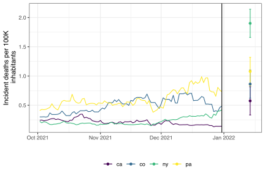

Daniel J. McDonald, Logan C. Brooks, Rachel Lobay, and Ryan J. Tibshirani
Published
13 June 2023
Preface
This long-form vignette describes some of the functionality of the epipredict R package, with an eye toward creating various types of forecasters, from simple baselines to more elaborate customizations.
Installation
You can install the development version of epipredict from GitHub with:
A set of basic, easy-to-use forecasters that work out of the box. You can do a reasonable amount of customization on them. For the basic forecasters, we currently provide:
Baseline flat-line forecaster
Autoregressive forecaster
Autoregressive (multinomial) classifier
A framework for creating custom forecasters out of modular components. There are four types of components:
Preprocessor: do things to the raw data before model training that should be reproduced at test time.
Trainer: train a model on data, resulting in a fitted model object
Predictor: make predictions, using a fitted model object
Postprocessor: do things to the predictions before returning
Target audiences:
Basic. Has data, calls forecaster with default arguments.
Intermediate. Wants to examine changes to the arguments, take advantage of some built in flexibility.
Advanced. Wants to write their own forecasters. Maybe willing to build up from some components that we write.
Even the Advanced user should find their task to be relatively easy. Examples of these tasks are illustrated in the vignettes and articles.
Intermediate example
The package comes with some built-in historical data for illustration, but up-to-date versions of this could be downloaded with the {covidcast} package and processed using {epiprocess}.1
#> An `epi_df` object, 20,496 x 4 with metadata:
#> * geo_type = state
#> * time_type = day
#> * as_of = 2022-05-31 12:08:25
#>
#> # A tibble: 20,496 × 4
#> geo_value time_value case_rate death_rate
#> * <chr> <date> <dbl> <dbl>
#> 1 ak 2020-12-31 35.9 0.158
#> 2 al 2020-12-31 65.1 0.438
#> 3 ar 2020-12-31 66.0 1.27
#> 4 as 2020-12-31 0 0
#> 5 az 2020-12-31 76.8 1.10
#> 6 ca 2020-12-31 96.0 0.751
#> # ℹ 20,490 more rows
To create and train a simple auto-regressive forecaster to predict the death rate two weeks into the future using past (lagged) deaths and cases, we could use the following function.
In this case, we have used a number of different lags for the case rate, while only using 3 weekly lags for the death rate (as predictors). The result is both a fitted model object which could be used any time in the future to create different forecasts, as well as a set of predicted values (and prediction intervals) for each location 14 days after the last available time value in the data.
The fitted model here involved preprocessing the data to appropriately generate lagged predictors, estimating a linear model with stats::lm() and then postprocessing the results to be meaningful for epidemiological tasks. We can also examine the predictions.
two_week_ahead$predictions
#> An `epi_df` object, 56 x 6 with metadata:
#> * geo_type = state
#> * time_type = day
#> * as_of = 2022-05-31 12:08:25
#>
#> # A tibble: 56 × 6
#> geo_value time_value .pred .pred_distn forecast_date target_date
#> * <chr> <date> <dbl> <dist> <date> <date>
#> 1 ak 2021-12-31 0.449 [0.05, 0.95]<q-rng> 2021-12-31 2022-01-14
#> 2 al 2021-12-31 0.574 [0.05, 0.95]<q-rng> 2021-12-31 2022-01-14
#> 3 ar 2021-12-31 0.673 [0.05, 0.95]<q-rng> 2021-12-31 2022-01-14
#> 4 as 2021-12-31 0 [0.05, 0.95]<q-rng> 2021-12-31 2022-01-14
#> 5 az 2021-12-31 0.679 [0.05, 0.95]<q-rng> 2021-12-31 2022-01-14
#> 6 ca 2021-12-31 0.575 [0.05, 0.95]<q-rng> 2021-12-31 2022-01-14
#> # ℹ 50 more rows
The results above show a distributional forecast produced using data through the end of 2021 for the 14th of January 2022. A prediction for the death rate per 100K inhabitants is available for every state (geo_value) along with a 90% predictive interval. The figure below displays the forecast for a small handful of states. The vertical black line is the forecast date. The forecast doesn’t appear to be particularly good, but our choices above were intended to be illustrative of the functionality rather than optimized for accuracy.

Contents
The remainder of this book examines this software in more detail, illustrating some of the flexibility that is available.
COVIDcast data and other epidemiological signals for non-Covid related illnesses are available with {epidatr}, which interfaces directly to Delphi’s Epidata API.↩︎